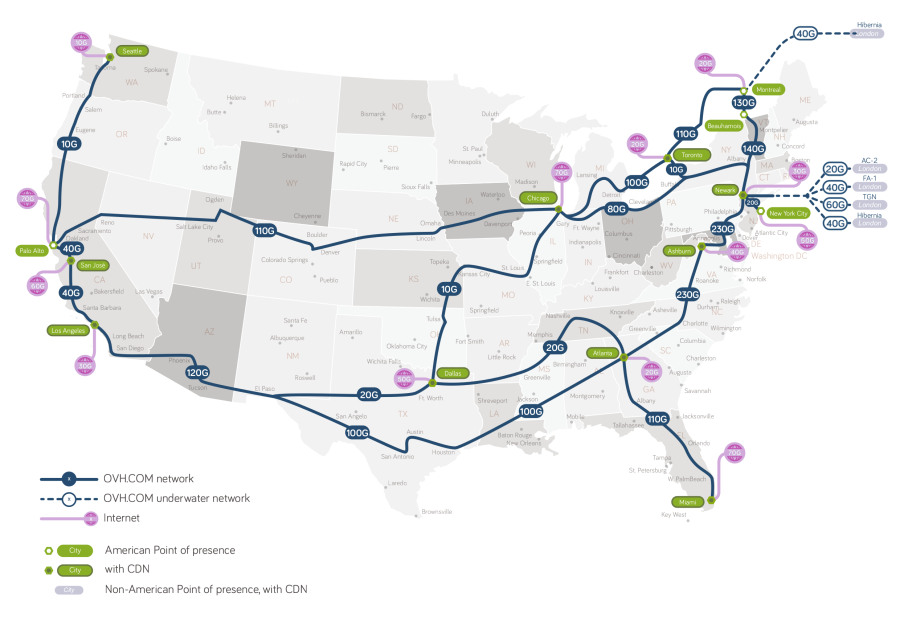
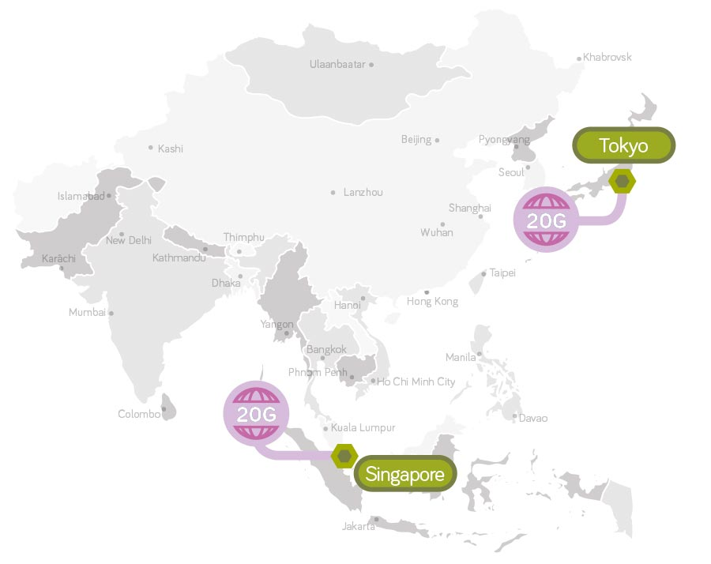
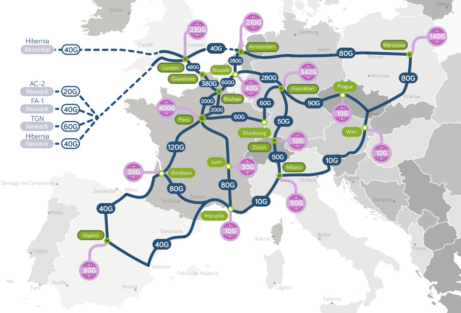
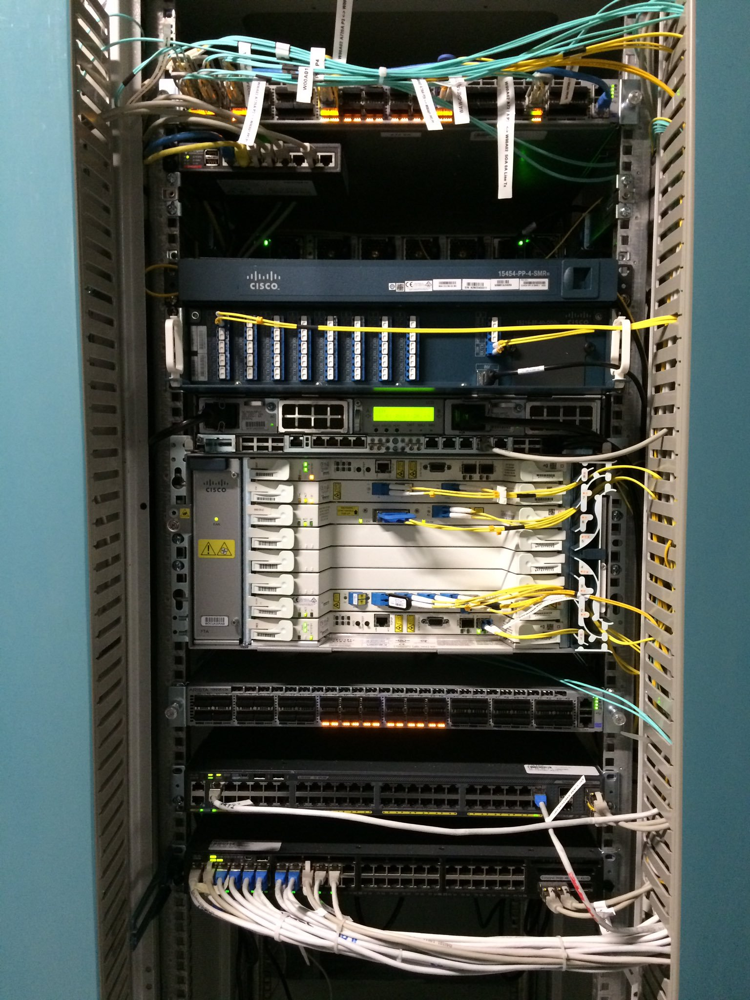
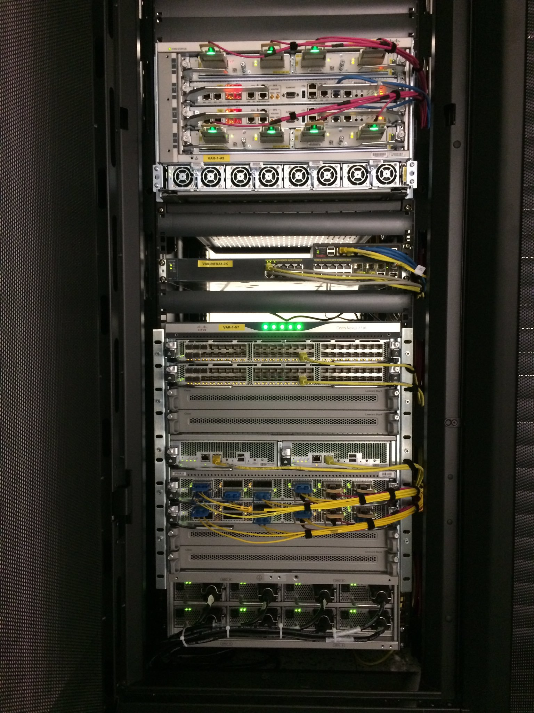
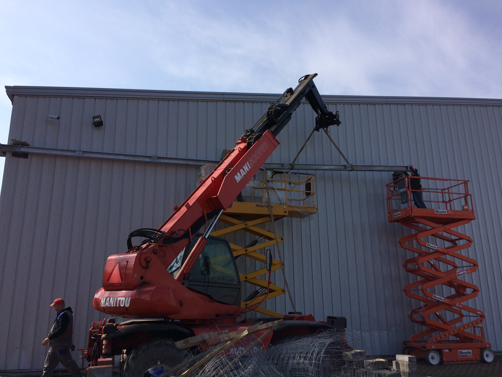
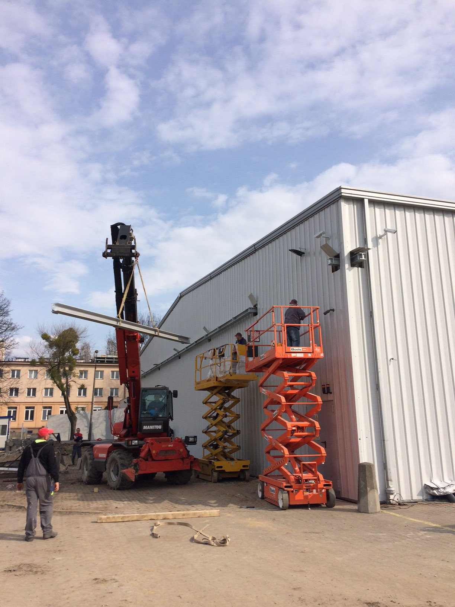

class: center, bottom, inverse, title # CloudOVH ## Cloud Infra #5 ### Polski rynek usług chmurowych Sławomir Kapłoński & Paweł Suder 7.11.2017 --- class: center, middle, inverse # OVH Krótki przegląd --- class: center, middle, regular ## OVH w liczbach ----- <div class="container"> <div class="row"> <div class="col"> <img src="images/img01.png"></img> </div> <div class="col"> <img src="images/img02.png"></img> </div> <div class="col"> <img src="images/img03.png"></img> </div> </div> <div class="row"> <div class="col"> Start w 1999 r. </div> <div class="col"> W Polsce od 2004 r. </div> <div class="col"> Ponad 2000 pracowników w OVH w 19 krajach We Wrocławiu ponad 50 </div> </div> </div> ----- --- class: center, middle, regular ## OVH w liczbach ----- <div class="container"> <div class="row"> <div class="col"> <img src="images/img04.png" style="heigth: 50%; width: 50%;"></img> </div> <div class="col"> <img src="images/img05.png"></img> </div> <div class="col"> <img src="images/img04.png" style="heigth: 50%; width: 50%;"></img> </div> </div> <div class="row"> <div class="col"> Ponad 1 mln klientów </div> <div class="col"> Ponad 60% klientów to profesjonaliści i resellerzy </div> <div class="col"> Klienci z blisko 140 krajów </div> </div> </div> ----- --- class: center, middle, inverse ## OVH na mapie -----  ----- Ośrodki OVH --- class: center, middle, regular ## OVH na mapie ----- <div class="container"> <div class="row"> <div class="col"> </img> </div> <div class="col"> </img> </div> </div> </div> ----- Sieć OVH w Ameryce i Azji --- class: center, middle, regular ## OVH na mapie ----- </img> ----- Sieć OVH w Europie --- class: center, middle, regular ## Innowacje w OVH DC Roubaix 4 <img src="images/img07.jpg" style="width: 60%"></img> Pierwsze centrum bez klimatyzacji --- class: center, middle, regular ## Innowacje w OVH Chłodzenie ----- <div class="container"> <div class="row"> <div class="col"> <img src="images/img08.jpg" style="height: 100%"></img> </div> <div class="col"> <img src="images/watercooling.jpg" style="width: 100%"></img> </div> </div> </div> ----- Zastosowane chłodzenie wodą i powietrzem Jedynie 10W zużywane jest na schłodzenie 100W serwera --- class: center, middle, regular ## Innowacje w OVH Odnawialne źródła energii ----- <img src="images/sbg1.jpg" style="width: 80%"></img> ----- Zainwestowaliśmy ponad 15 mln € w odnawialne źródła energii --- class: center, middle, regular ## Innowacje w OVH Własne serwery ----- <img src="images/header-production.jpg" style="width: 60%"></img> ----- OVH produkuje swoje własne serwery i dysponuje kilkoma liniami produkcyjnymi we Francji i w Kanadzie. --- class: center, middle, regular ## Innowacje w OVH Budowa DC ----- <img src="images/sbg1.jpg" style="width: 80%"></img> ----- DC w Strasbourg Zastosowanie kontenerów do budowy centrum --- class: center, middle, inverse # OVH w Polsce Nowe DC OVH --- class: center, middle, regular ## Nowe DC w Ożarowie Mazowieckim ----- <img src="images/C3o8QYNWIAAG2RJ.jpg" style="width: 35%"></img> ----- _Octave: DC WAW1 in Warsaw: Room 0 for the routing gears._ <!-- <div class="link" url="https://twitter.com/olesovhcom/status/827039870304604160"></div> --> --- class: center, middle, regular ## Nowe DC w Ożarowie Mazowieckim ----- </img> ----- <!-- <div class="link" url="https://twitter.com/olesovhcom/status/827039870304604160"></div> --> --- class: center, middle, regular ## Nowe DC w Ożarowie Mazowieckim ----- </img> ----- _Octave: 2nd POP WA2 Equinix in Warsaw, with 800Gbps capacity._ _Now, we start selling in PL ! :)_ <!-- <div class="link" url="https://twitter.com/olesovhcom/status/837652829586210816"></div> --> --- class: center, middle, regular ## Nowe DC w Ożarowie Mazowieckim ----- </img> ----- _Octave: The inside of the DC is done for 40000 servers._ _Time to work on the outside :)_ <!-- <div class="link" url="https://twitter.com/olesovhcom/status/849784707172708354"></div> --> --- class: center, middle, regular ## Nowe DC w Ożarowie Mazowieckim ----- </img> ----- <!-- <div class="link" url="https://twitter.com/olesovhcom/status/849784707172708354"></div> --> --- class: regular # OVH w Polsce ----- <div class="center"> Produkty hostowane w Polsce </div> ----- <div class="container"> <div class="row"> <div class="col center"> <div class="icn icn-publicCloud"></div> Public Cloud </div> <div class="col center"> <div class="icn icn-privateCloud"></div> Private Cloud </div> </div> <div class="row"> <div class="col center"> <div class="icn icn-vps"></div> VPS </div> <div class="col center"> <div class="icn icn-dedicated"></div> Dedykowane serwery </div> </div> </div> --- class: center, middle, inverse # Public Cloud --- class: regular # Public Cloud ----- Co nas wyróżnia? - certyfikat zgodności OpenStack API - Nova Compute - Swift Object Storage - OpenStack Powered Platform - backend dla wolumenów umieszczony jest na klastrze Cepf - instancje posiadają w pełni osiągalny publiczny adres IP - integracja innych usług, dostarczanych przez OVH, z OpenStack'iem - domyślnie sieć zabezpieczona przed nadmiernym ruchem przez Anti-DDoS - w DC WAW1 region jest w wersji Newton <div class="link" url="https://www.ovh.pl/public-cloud/instances/"></div> --- class: regular # Public Cloud ----- Sieć w OVH - każda z instancji posiadać może adres sieci publicznej - adres sieci publicznej ma maskę /32 - brak ruchu rozgłoszeniowego na interfejsie instancji - możliwość podłączenia wielu sieci prywatnych do instancji - prywatne sieci dostępne w różnych regionach dzięki vRack - ruch między siecią OVH a zewnetrzną jest chroniony przez Anti-DDoS --- class: center, middle, inverse # vRack  Prywatne połączenie wszystkich infrastruktur na całym świecie --- class: center, middle, regular ## Prywatna sieć  vRack pozwala na odizolowanie najważniejszych serwerów w ramach prywatnej sieci VLAN. Twoje dane są zabezpieczone a komunikacja między serwerami nie odbywa się za pomocą sieci publicznej. --- class: center, middle, regular ## Wiele sieci VLAN  Możesz wdrożyć aż do 4000 prywatnych sieci VLAN. Do serwerów dedykowanych możliwe jest doprowadzenie łącza trunk, a do instancji Public Cloud - wiele interfejsów różnych sieci prywatnych. --- class: center, middle, regular ## Infrastruktura hybrydowa  Możliwe jest połączenie Public Cloud z serwerami dedykowanymi. --- class: center, middle, regular ## Multidatacenter  vRack działa między różnymi centrami danych OVH. Od Europy po Kanadę: możesz budować prywatne i redundantne infrastruktury umieszczone w kilku centrach danych. --- class: regular # vRack ----- Technologia vRack (wirtualna szafa) pozwala na podłączenie, odizolowanie i rozdzielenie usług OVH w ramach jednej lub kilku prywatnych i zabezpieczonych sieci. Dzięki unikalnym technologiom sieciowym możesz zbudować zaawansowane prywatne infrastruktury w strefie wielu centrów danych. Planowane jest uruchomienie vRouter, który pozwoli na zestawienie połączenia między własnymi zasobami a zasobami w OVH. <div class="link" url="https://www.ovh.pl/rozwiazania/vrack/"></div> --- class: regular # vRack Connect ----- Możliwość bezpośredniego połączenia własnego DC z zasobami w OVH. W Polsce będzie ono dostępne w wersji **Dedicated** w Warszawie przez punkty: - **Lim** - **Thinx** <div class="link" url="https://www.ovh.pl/rozwiazania/vrack-connect/"></div> --- class: center, middle, inverse # Planowane usługi --- class: regular # Load Balancer ----- Dedykowana usługa pozwalająca na rozdzielanie ruchu sieciowego między serwerami. Na chwilę obecną IPLB nie jest dostępne w Polsce. Trwają prace nad integracją produktu OVH IPLB z OpenStack. Pozwoli to na zarządzanie load balancerem z poziomu OpenStack API. --- class: regular # Telemetria ----- Usługa pozwalająca na dostarczenie informacji o zużyciu zasobów oraz aktualnym obciążeniu. Trwają prace nad integracją obecnego systemu metryk z OpenStack. Pozwoli to na pobieranie danych z poziomu OpenStack API. --- class: regular # Alarmy i orchestracja ----- Usługi OpenStack Aodh oraz Heat bazujące na danych z metrykach. Alarmy wyzwalane są przy określonych wartościach metryk. Określone alarmy powodują akcje, którymi mogą być dynamiczne dodawanie lub usuwanie instancji. --- class: center, middle, inverse ## Pytania --- class: center, middle, inverse ## Dziękujemy